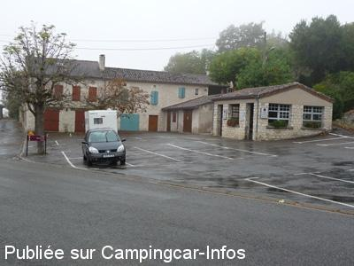

ASN = Aire de services avec stationnement nuit possible de :
LAUZERTE
(N° 507)
Accès/adresse :
Route de Moissac
Place du Foirail
82110 LAUZERTE
Place du Foirail
82110 LAUZERTE
Latitude : (Nord) 44.25425° Décimaux ou 44° 15′ 15′′
Longitude : (Est) 1.13677° Décimaux ou 1° 8′ 12′′
Tarif : Gratuit
Type de borne : Artisanale
Services :


Tous commerces
Espace propreté Poubelles
Autres informations :
Aire ouverte toute l'année près d'un lavoir
A 500 m du cœur historique de la Cité Médiévale
Tél : +33(0)563 946 194
http://www.lauzerte-tourisme.fr
Le 10/01/2012 par Breizh 22
Le 10/01/2012 par Breizh 22
Le 10/01/2012 par Breizh 22

Le 30/03/2010 par tony 16
de
state44
le 02/05/2015 :
Magnifique village de Lauzerte,très bon accueil bravo à la municipalité.Nous avons séjourné au camping de Lauzerte super petit camping et bonne restauration.
Magnifique village de Lauzerte,très bon accueil bravo à la municipalité.Nous avons séjourné au camping de Lauzerte super petit camping et bonne restauration.
de
verrier jl
le 07/09/2014 :
parking en bordure de route.
très bien pour la visite de la citée par contre pour la nuit se diriger vers l'une des deux autres aires.
parking en bordure de route.
très bien pour la visite de la citée par contre pour la nuit se diriger vers l'une des deux autres aires.
de
breizh22
le 10/01/2012 :
Lauzerte un écrin pour une perle de beauté ,merci a vous pour votre accueil habitants de lauzerte si fiers de votre magnifique village et de nous conter son histoire ne pas rater les jardins,belvédére et sentiers au bas de la cité médiévale et n'oubliez pas l'argentique ou numérique et laissez vous charmer et imprégner par tant de beauté insoupconné (un amoureux )...
Lauzerte un écrin pour une perle de beauté ,merci a vous pour votre accueil habitants de lauzerte si fiers de votre magnifique village et de nous conter son histoire ne pas rater les jardins,belvédére et sentiers au bas de la cité médiévale et n'oubliez pas l'argentique ou numérique et laissez vous charmer et imprégner par tant de beauté insoupconné (un amoureux )...